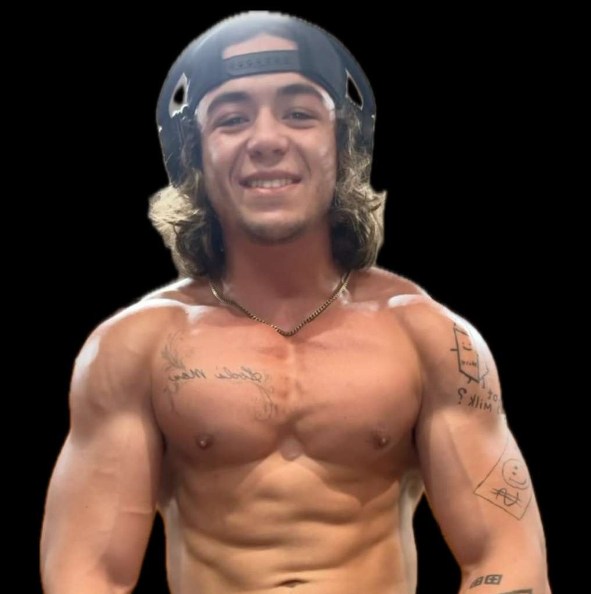
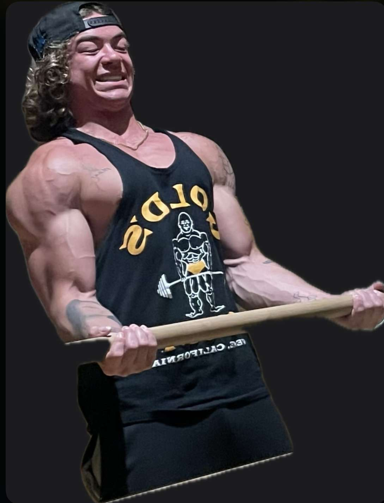
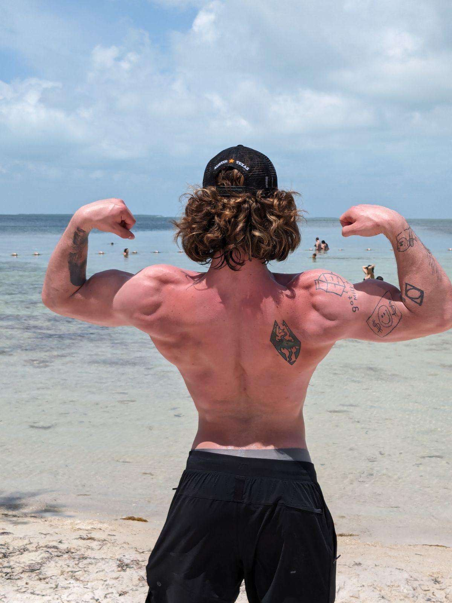

Welcome to [Your Website Name]! I’m excited to help you kickstart your fitness journey with a free, personalized workout plan tailored just for you. Simply answer a few questions about your fitness goals and preferences, and I'll craft a plan that sets you on the path to wellness.
Loved the results from your free plan and ready to take your fitness to the next level? Explore my premium memberships for more dedicated time with me and access to exclusive features. Let's continue this journey together and unlock your full potential!
Join me today and transform the way you look, feel, and live.
Take Quiz
Hello!👋 I’m Mark Kuphal💪🏋🏼♂️


I’m thrilled you’ve stopped by my page. As a passionate personal trainer, my primary joy comes from helping others discover the power of a healthy lifestyle and achieve their fitness goals.🫵 My journey to wellness hasn’t always been straightforward. Like many, I’ve faced my fair share of challenges and obstacles along the way. But these experiences taught me that perseverance and hard work truly pay off.
From a young age, I’ve been dedicated to maintaining my health and fitness. This commitment wasn't just about hitting personal bests or mastering new workout routines; it was about building a foundation of wellness that could support every aspect of my life. Now, I'm eager to pass on the valuable lessons I've learned about nutrition, exercise, and mental resilience.🤝

Whether you're starting your fitness journey, looking to elevate your routine, or needing motivation to continue, I'm here to guide and support you.👏 Together, we’ll tailor a plan that fits your lifestyle, respects your limits, and celebrates your victories, big and small. Let’s embark on this exciting path to better health, achieving not just your fitness goals, but a sustained and joyful way of living.🤙
Links to my certifications: TBD